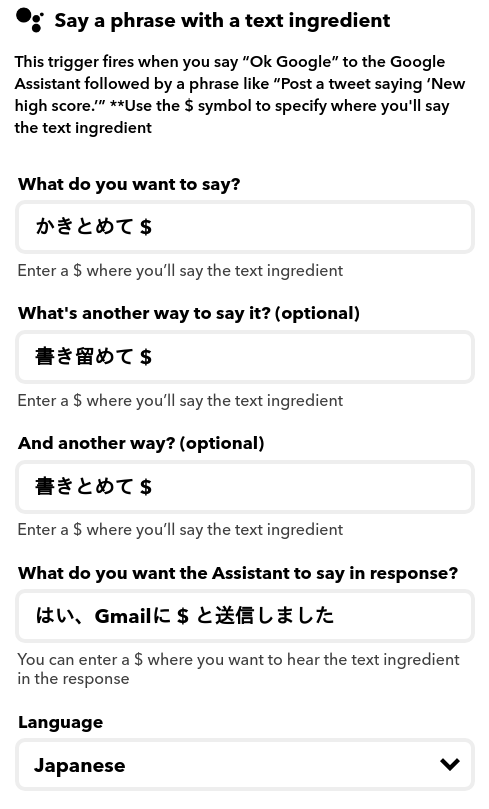
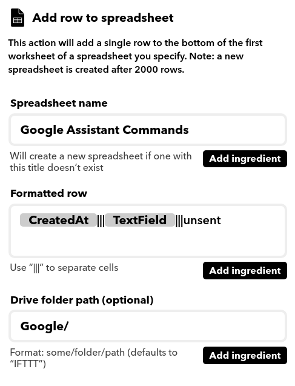
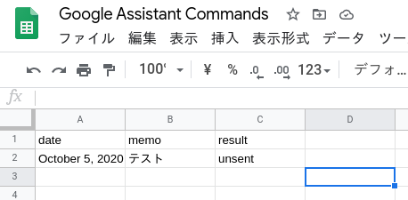

Google Assistantに話しかけると、スプレッドシートに入力され、さらに内容がメールで自分に送られてくる、という仕組みを作ったのでメモ。要するに音声メモ。
流れは以下の通り。
Google Assistant -> [IFTTT] -> スプレッドシート -> [GAS] -> Gmail送信
最初はIFTTTでSlackへの直接投稿を狙っていたのだが、自宅のGoogle homeでは機能しなかった。スマートフォンのAssistantでは問題なかったので、homeの仕様かもしれないが、似た症例を見つけられず、結果的に送信部分はGAS、という今の形をとることに。IFTTTとGASに分ければ、Gmailでなく他の手段に切り替えたいときも比較的イージーに変更できそう、という点もメリット。
まず、IFTTT経由でのスプレッドシートへの入力について。
THISは以下の通り。

THATはこちら。

日付のCreatedAt、text ingredientが代入されるTextFieldに加えて、定形であるunsentを入力しておく。
スプレットシートはこのようになる。

このスプレッドシートからスクリプトエディタを起動。
コードはこちら。
var recipient = 'mailaddress';
var subject = 'memo from Google Assistant';
var sheet = SpreadsheetApp.getActiveSheet();
var last_row = sheet.getLastRow();
function main() {
for(var i = 2; i <= last_row; i++){
let isSent = sheet.getRange(i, 3);
if(isSent.getValue() == 'unsent'){
var body = sheet.getRange(i, 2).getValue();
GmailApp.sendEmail(recipient, subject, body);
isSent.setValue('sent');
}
}
}
GAS、というかJavaScriptを触ったことがほとんどないので変なところがありそうだが、今のところ動いている。
家事をしているときに忘れていた用事や入れておいたほうがいいtodoを思いつきがちなので、すぐにGoogle nest等に話しかけることでメモがとれるのはかなり使い勝手がいい。